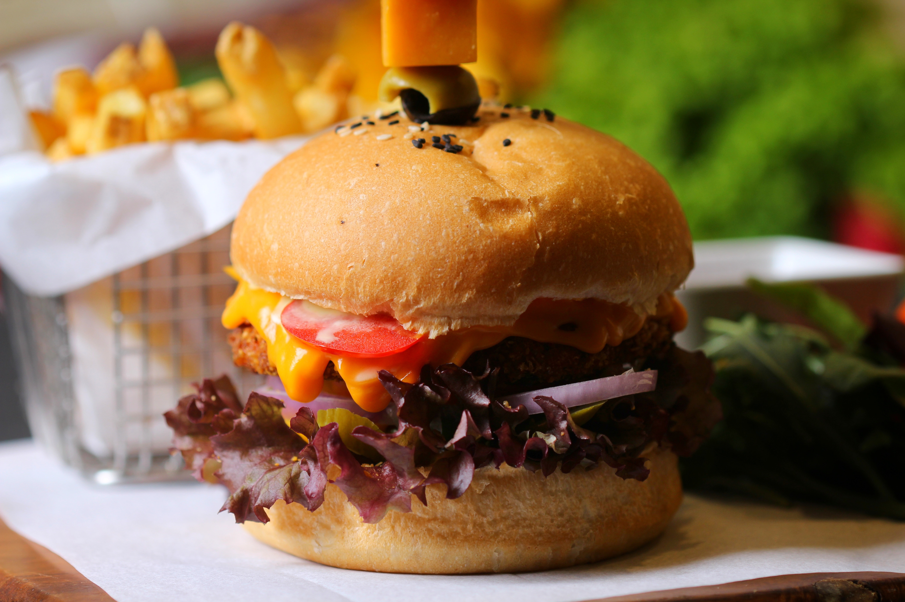

Le burger végétalien est une option hautement nutritive
Source de vitamines, de fibres et de minéraux, le burger végétalien est une option hautement nutritive pour l'alimentation. C'est parce qu'il peut être préparé avec une série de légumes et d'aliments sains, tels que les pois chiches, les lentilles, les aubergines, les courgettes et divers assaisonnements. Les légumineuses, par exemple, sont des sources importantes de protéines végétales, de fibres et d'autres nutriments essentiels pour tout régime alimentaire. Par conséquent, notre conseil est justement de miser sur les variations de hamburgers pour essayer différentes saveurs.
Il y a des hamburgers végétaliens de différentes saveurs
Ao contrário do hambúrguer tradicional (feito com carne), o hambúrguer vegano pode ter diferentes sabores, justamente por conta da riqueza de vegetais e temperos usados em seu preparo. A Taeq, por exemplo, disponibiliza hambúrguer vegano de grão-de-bico com alho-poró, de berinjela com castanha de caju e gergelim, dentre outros sabores originais, que fazem sucesso na dieta vegana.
Le burger végétalien est plus durable
Il convient de mentionner que le mode de vie végétalien suit une ligne beaucoup plus durable. Après tout, des études ont déjà prouvé que les produits d'origine animale ont un impact négatif sur l'environnement - assurant un plus grand gaspillage d'eau et l'émission de gaz à effet de serre. Par conséquent, si l'idée est d'avoir une consommation consciente et écologique, notre conseil est de donner une chance au burger végétalien (et aux autres aliments qui font partie de l'alimentation).
Le burger végétalien peut être assaisonné, préparé et servi de différentes manières
Un autre point positif du burger végétalien est qu'il est délicieux de différentes manières : préparé à la poêle, au gril, au four, à l'airfryer et se combine avec pratiquement tous les assaisonnements et épices. Autrement dit, vous pouvez mettre en place une routine gastronomique très diversifiée, en préparant des hamburgers de différentes saveurs (au lieu de vous en tenir uniquement à l'option viande).